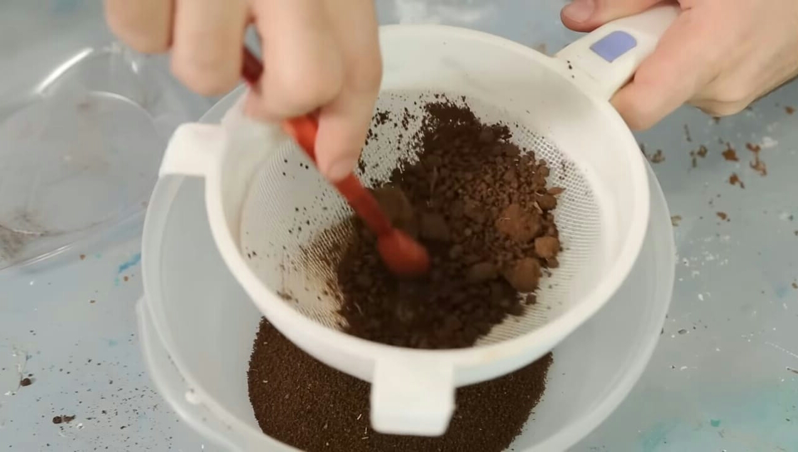
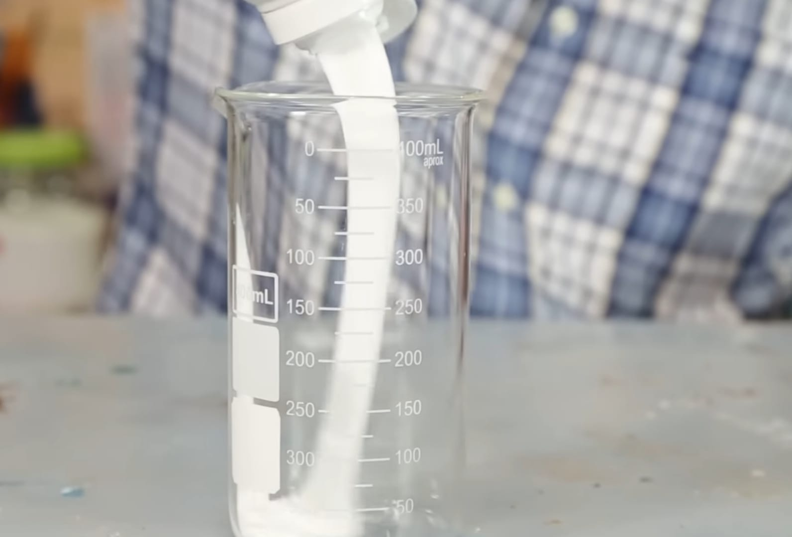
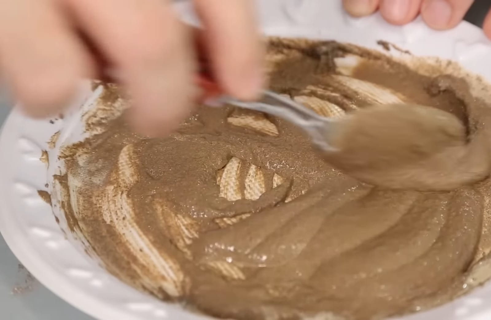
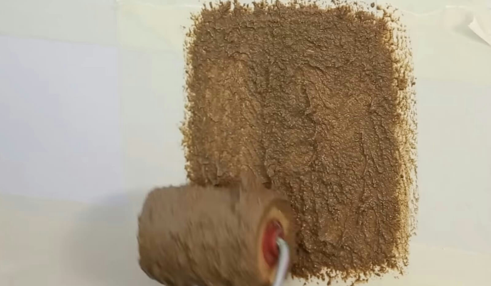

A tinta terra é sustentável e saudável para cobertura de ambientes. Com sua composição natural e biodegradável, reduz o impacto ambiental causado pelas tintas convencionais. Além disso, a tinta terra valoriza a cultura local.
Ela é produzida utilizando pigmentos naturais obtidos a partir de diferentes tipos de solo, como argila, areia e óxidos minerais. Esses pigmentos são misturados com água e outros ingredientes orgânicos, como óleos vegetais e resinas naturais, para criar uma tinta de alta qualidade e durabilidade. Uma das principais vantagens da tinta de terra é a sua sustentabilidade. Ela não contém produtos químicos tóxicos ou aditivos artificiais, o que a torna uma opção segura para o meio ambiente e para a saúde das pessoas. Além disso, a produção da tinta de terra consome menos energia e gera menos resíduos do que a produção de tintas convencionais. Esse tipo de tinta oferece uma ampla variedade de cores terrosas, que podem variar desde tons suaves e neutros até cores mais vibrantes. A textura da tinta também é única, conferindo um aspecto rústico e acolhedor às paredes pintadas com ela. É importante ressaltar que, assim como qualquer tipo de tinta, a tinta de terra requer preparação adequada da superfície antes da aplicação. Além disso, pode ser necessário reaplicá-la periodicamente para manter a cor e o acabamento desejados. No geral, a tinta de terra é uma escolha sustentável e esteticamente atraente para quem busca uma alternativa natural e ecologicamente consciente para pintar suas paredes.
》Terra (Tons diferentes)
》Água
》Cola branca
》Peneira
》Potes
》Pincel
Coloque a terra em um pote e amasse bastante para que fique triturada. Após isso, passe a terra pela peneira. quanto mais fina a terra, melhor ficará a tinta.
Acrescente um pouco de água e cola branca.
Misture bem a tinta até ficar pronto. Ela deve ficar com uma textura cremosa como qualquer outro tipo de tinta.
Coloque as tintas em potes para guardá-las, você pode usar por vários dias. use a criatividade para criar inúmeros tons de cores para utilizar!
